The Font Engine
Contents
- Introduction
- How the font engine works
- The interpreter environment
- Instruction processing
- Managing points in the pixel grid
Introduction
This chapter provides an overview of the key concepts needed to understand the TrueType font engine, the software that converts the information in a TrueType font into a raster image suitable for display on screen or printer.
How the font engine works
Rasterizing a glyph outline is a multi-step process that proceeds as follows:
- The master outline description of the glyph is scaled to the appropriate size.
- The scaled outline is grid-fitted according to its associated instructions.
- The grid-fitted outline is scan converted to produce a bitmap image suitable for raster display.
Figure 1 illustrates this process.
Figure 1 The work of the font engine
|
master outline 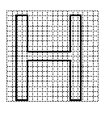 |
1-scaled outline 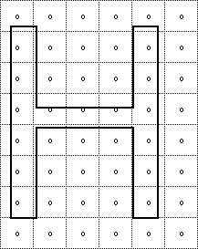 |
|
2-grid-fitted outline 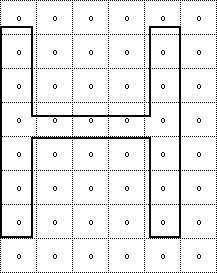 |
3-raster image 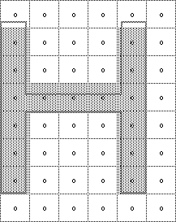 |
Scaling the master outline
A TrueType font stores a master outline description for each glyph. When an application requests a particular glyph at a specific size for a specific device, the font engine will create the necessary bitmap.
The first step in this process is to scale the master outline to the desired size. Scaling an outline is the work of that portion of the font engine known as the scaler. When the master outline is scaled, the points that make up the glyph outline are changed from device independent em units to device dependent 26.6 fixed point numbers representing locations in a pixel grid. In the text that follows, master outline points shown as grid coordinates will have a bar over the coordinate numbers as in (x~,y~).
A scaled outline point can occupy any position expressible as a sixty-fourth of a pixel (i.e as a 26.6 fixed point number). Scaled coordinates which are still in their original outline positions (that is, have not been grid-fitted by instructions) will be shown with a tilde over the coordinates as in (x~, y~). Point coordinates that are expressed to the nearest sixty fourth of a pixel will be shown with a colon separating the whole number portion of the coordinate from the fractional portion. One and one half pixels will therefore be written as 1:32 in this notation.
Pixel centers are always at the intersection of two half-grid lines. The point (2:32, 7:32) occupies a pixel center while the point (3:0, 4:0) does not. The relationship of pixels to the grid is shown in FIGURE 2.
FIGURE 2 Pixels and the grid
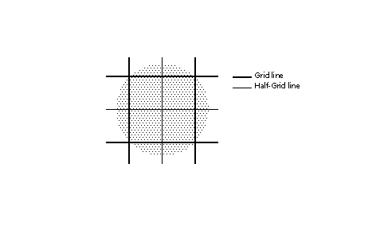
Converting FUnits to pixels
The scaler converts values in the master coordinate system to values in the pixel coordinate system by multiplying them by a scale. This scale is:
pointSize * resolution / (72 points per inch * units_per_em).
where pointSize is the size at which the glyph is to be displayed, resolution is the resolution of the output device and units per em is the resolution of the grid of which the master outline was originally defined. The 72 in the denominator represents the number of points per inch.
For example, assume that a glyph feature is 550 FUnits in length and defined on a master grid with 2048 units per em. The following calculation reveals that its size on a 72 dpi screen at 18 points, is 4.83 pixels.
550 * [(18 * 72 )/ (72 * 2048 )] = 4.83
Creating the origin point and the advance point
The scaler creates two additional points using the data in the 'hdmx' table in the font file. These points represent the origin and advance width of the glyph. The origin point is the original pen position. Imagine that the pen moves the left-side bearing distance, draws the glyph, moves the pen the advance width from the origin point and is now in place to begin the next glyph. This location is the advance point. The origin point and the advance point are accessible to instructions. If the points in a given glyph are numbered from 0 to n-1, the origin point would have the number n and the advance point the number n+1.
FIGURE 3 A glyph outline with the origin and advance points added
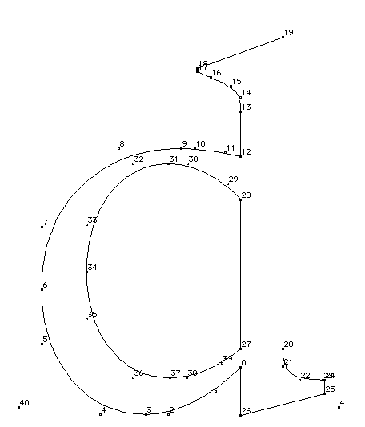
Grid-fitting a scaled outline
Once the master outline for a particular glyph has been scaled to the desired size and device, the instructions associated with that glyph can be executed. Two key goals of instructing glyphs are to eliminate the effect of chance relationships to the grid and to control key dimensions. For more information see Instructing Fonts.
As the previous statements indicate, a key effect of executing glyph instructions is to move the scaled outline points describing the glyph to new locations. Once so moved, points are said to be grid-fitted. Their coordinates are indicated as (x,y) positions in the coordinate grid.
Since instructions operate after the master outline has been scaled their effect is dependent upon the actual size and resolution of the glyph requested. FIGURE 4 shows a master outline and two grid-fitted outlines produced from that master by executing the associated glyph instructions. The grid-fitted outline produced by first scaling the master outline to 12 pixels per em and then executing the glyph instructions differs from that produced by first scaling the master outline to 18 pixels per em and then executing the glyph instructions.
The instructions need not be size or resolution specific since they refer to the points as they existed in the original master outline. Their actions are based on a geometric analysis of the features of a glyph and are size and resolution independent. The exceptions to this rule are the size and resolution specific DELTA instructions described later in this chapter.
FIGURE 4 Scaling then grid-fitting the master outline
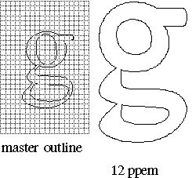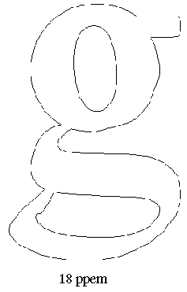
Scan converting a grid-fitted outline
Once the master outline has been scaled and grid-fitted, it is ready to be rasterized by the scan converter. The scan converter takes the grid-fitted outline and applies a set of rules to determine which pixels will be part of the glyph image when printed or displayed on the screen.
The first of these rules is as follows:
Rule 1: If a pixel's center falls within or on the glyph outline, that pixel is turned on and becomes part of the bitmap image of the glyph.
Distinguishing the inside from the outside of a glyph
A key problem facing the scan converter is determining what it means for a pixel center to fall "within or on the glyph outline". Sometimes this may seem to be obvious, but complex glyphs can make this seemingly straight-forward questions a difficult one.
The TrueType scan converter solves this problem by using the non-zero winding number rule to distinguish the interior from the exterior of a glyph. This rule is as follows:
Points that have a non-zero winding number are inside the glyph. All other points are outside the glyph.
The four steps presented below consitute a method for determining the winding number of a point.
- Draw a ray from the point in question toward infinity. (The direction in which the ray points in unimportant.)
- Starting with a count of zero.
- Add one to the count each time a glyph contour crosses the ray from right to left or bottom to top. (Such a crossing is termed an on-transition because the TrueType scan converter scans from left to right and bottom to top.)
- Subtract one from the count each time a contour of the glyph crosses the ray from left to right or top to bottom. (Such a crossing is termed an off-transition.)
- If the final count is non-zero, the point is an interior point. Otherwise, it is an exterior point.
The direction of a contour can be determined by looking at the point numbers that define the contour. Its direction is from a lower point number toward a higher point number.
An on-transition is shown in FIGURE 5. Here the contour crosses the ray from bottom to top.
FIGURE 5 An on-transition
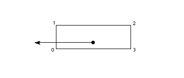
An off-transition is shown in FIGURE 6. Here the contour crosses the ray from left to right.
FIGURE 6 An off-transition
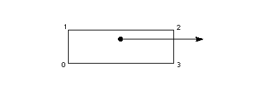
FIGURE 7 demonstrates the use of winding numbers in determining whether a point is inside a glyph. Considering each of the points in questions, the following can be said:
- Points p1 and p4 each undergo a single transition giving them non-zero winding numbers. They are interior points.
- Point p2 under goes an off-transition followed by an on-transition giving it a zero winding number. It is an exterior point.
- Points p3 and p5 illustrate the importance of properly setting curve directions. Point p3 undergoes an on-transition followed by an off-transition, has zero winding number. It is an exterior point.
- Point p5, on the other hand, undergoes an off-transition followed by a second off-transition giving it a winding number of 2. It is an interior point.
FIGURE 7 Interior and exterior points
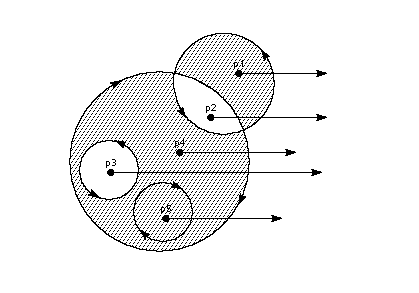
Using the scan converters to control dropouts
TrueType instructions are designed to make it possible to gridfit a glyph so that the desired pixels will be turned on by the Rule 1 regardless of the point size or the transformation used. It is often difficult to foresee all possible transformations that a glyph might undergo. This fact makes it difficult to instruct a glyph to ensure that the proper grid-fitting distortion of the outline will take place for every desired transformation. This is often a problem for complex glyphs displayed at very small pixel per em sizes. In these situations, some renditions of a glyph may contain dropouts (holes or gaps in the rendered bitmap). In such cases, the use of an alternate scan conversion mode may prove desirable.
Font creators can, if desired, invoke two additional scan conversion rules by changing the scan converter mode from the default setting to the dropout control mode. The decision about which scan converter mode to use can be made on a font wide basis or glyph by glyph.
The choice of scan conversion mode is made by setting the value of the graphics state variable scan control. The interpreter considers each of three conditions in determining whether dropout control mode will be used:
- Is the glyph rotated?
- Is the glyph stretched?
- Is the current setting for ppem less than a specified ppem value?
It is also possible to turn dropout control off completely.
Changing the value of scan control is a task accomplished using the SCANCTRL[] instruction. See SCANCTRL[] SCAN conversion ConTRoL. for more on changing the value of scan control.
To understand the dropout control scan conversion rules, it is important to know that a scan line is a horizontal or vertical line that sweeps across the face of a glyph. The intersection of a horizontal and vertical scan line determines a pixel center.
FIGURE 8 Adjacent pixels

A dropout occurs whenever there is a connected region within a glyph interior that contains two black pixels that cannot be connected by a line that passes only through black pixels. It is possible to test for potential dropouts by looking at an imaginary line segment connecting two adjacent pixel centers. If this line segment is intersected by both an on-transition contour and an off-transition contour, a potential dropout condition exists. The potential dropout becomes an actual dropout only if the two contour lines continue on in both directions to cut other line segments between adjacent pixel centers. This condition is illustrated in FIGURE 9.
FIGURE 9 Condition leading to two dropouts
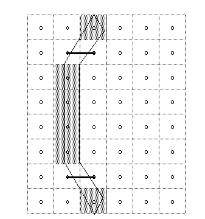
Two lines or curves that join together immediately after crossing a scan line form a stub. Stubs do not cause dropouts but may result in a stem of the glyph that is shorter than desired. This situation is shown in FIGURE 10.
FIGURE 10 A stub
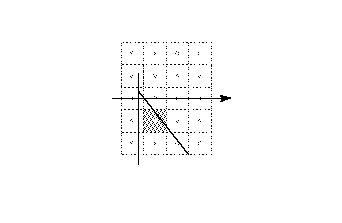
The scan converter can be operated in a mode in which both dropouts and stubs are filled in. The rules employed in dropout and stub control mode (scan converter mode 0) are shown below.
Rule 2a: If a horizontal scan line connecting two adjacent pixel centers is intersected by both an on-transition contour and an off-transition contour, and neither of the two pixels was already turned on by rule 1, turn on the left-most pixel.
Rule 2b: If a vertical scan line connecting two adjacent pixel centers is intersected by both an on-transition contour and an off-transition contour, and neither of the two pixels was already turned on by rule 1, turn on the bottom-most pixel.
The scan converter can also be operated in a mode in which only dropouts are filled in and stubs are left as is (scan converter mode 1). Rules 3a and 3b describe its operation in this mode.
Rule 3a: If a horizontal scan line connecting two adjacent pixel centers is intersected by both an on-transition contour and an off-transition contour, neither of the pixels was already turned on by rule 1, and the two contours continue on to intersect other scan lines (this is not a 'stub'), turn on the left-most pixel.
Rule 3b: If a vertical scan line connecting two adjacent pixel centers is intersected by both an on-transition contour and an off-transition contour, neither of the pixels was already turned on by rule 1, and the two contours continue on to intersect other scan lines (this is not a 'stub'),turn on the bottom-most pixel.
Scan line segments that form a square with the intersected scan line defining their boundaries are examined to verify that they are intersected by two contours. It is possible that these could be different contours than the ones intersecting the dropout scan line segment. This is very unlikely but may have to be controlled with grid-fitting in some exotic glyphs.
The interpreter environment
The interpreter is the portion of the TrueType interpreter that executes the instructions found in a font file.
Where instructions can be used
Instructions can be associated with particular glyphs or can be associated with a font as a whole. Instructions associated with a particular glyph are termed a glyph program. Instructions can also be used in the font program and the control value program.
The font program (found in the 'fpgm' table in the font file) is a set of instructions executed once, the first time a font is accessed by an application. The font program is used to create function definitions (see "FDEF[] Function DEFinition") and instruction definitions (see "IDEF[] Instruction DEFinition"). Functions and instructions defined in the font program can be accessed in the individual glyph programs. See also, "A sample font program" on page 3-145.
The control value program is a sequence of instructions executed every time the point size or transformation changes. These instructions are stored in the 'prep' table of the font file. The control value program is used to make font wide changes rather than to manage individual glyphs. See also, "A sample control value program".
Instructions that belong to glyph programs are stored in the 'glyf' ' table of the font file. Instructions associated with a glyph are executed every time that glyph is requested.
Instruction names
Instructions are uniquely specified by their opcodes but are more commonly referred to by their names.
Instruction names are of the form MNEMONIC[flag] where the mnemonic is intended as an aid to remembering the instruction's function. For example, the MDAP in MDAP[a] instruction stands for Move Direct Absolute Point. Similarly, RUTG[ ] is short for Round Up To Grid.
Closely related instructions sometimes share a single name. Such names can be mapped to unique opcodes using an associated set of flags. To calculate the opcode for an instruction variant, add the unsigned binary number represented by the flag to the lower of the two opcode values given in the documentation. In performing this operation, note that the left most bit is the most significant.
The flags that follow an instruction name also serve to define the semantic meaning of each instruction variant. The binary number is decomposed into a sequence of flags. Flags set to 1 represent TRUE. Flags set to 0 represent FALSE. The binary digits can also be grouped to make it possible to choose among more complex alternatives. In such cases, the documentation specifies the meaning associated with each possible numerical combination.
The graphics state
The graphics state consists of a set of variables that guide the actions of the interpreter. The graphics state variables will be introduced as needed in this chapter. A complete list of the graphics state variables can be found in "The Graphics State".
The graphics state variables all have default values established at the start of interpretation of any font. The default value for a given graphics state variable is reestablished at the start of interpretation of any glyph. In other words, the graphics state has no inter-glyph memory. Changing the value of a graphics state variable while processing an individual glyph will produce a change that remains in effect only for that glyph.
To establish a new default value for a graphics state variable, it is necessary to change the value of that variable in the control value program. Changes made in the control value program will apply to all subsequently processed glyphs unless INSTCTRL[] is used to inhibit these new values.
Instructions are available for changing the value of each of the graphics state variables. Instructions that change the value of a graphics state variable sometimes have a name that begin with the word set. (The instructions that set the round state are an exception to this rule.) The new value is expected to be at the top of the stack.
The instructions that set the value of a graphics state variable are listed in Table 1.
Table 1 Setting graphics state values
| Graphics state variable | Mnemonic | Instruction | |
|---|---|---|---|
| freedom & projection vector | Set Vectors To Coordinate Axis | SVTCA[a] | |
| projection vector | Set Projection Vector To Coordinate Axis | SPVTCA[a] | |
| freedom vector | Set Freedom Vector To Coordinate Axis | SFVTCA[a] | |
| projection vector | Set Projection Vector To Line | SPVTL[a] | |
| freedom vector | Set Freedom Vector To Line | SFVTL[a] | |
| freedom vector | Set Freedom Vector To Projection Vector | SFVTPV[] | |
| dual projection vector | Set Dual Projection Vector To Line | SDPVTL[] | |
| projection vector | Set Projection Vector To Line | SVPTL[] | |
| projection vector | Set Projection Vector From Stack | SPVFS[] | |
| freedom vector | Set Freedom Vector From Stack | SFVFS[] | |
| rp0 | Set Reference Point 0 | SRP0[] | |
| rp1 | Set Reference Point 1 | SRP1[] | |
| rp2 | Set Reference Point 2 | SRP2[] | |
| zp0 | Set Zone Pointer 0 | SZP0[] | |
| zp1 | Set Zone Pointer 1 | SZP1[] | |
| zp2 | Set Zone Pointer 2 | SZP2[] | |
| zp0, zp1, zp2 | Set Zone PointerS | SZPS[] | |
| round state | Round To Half Grid | RTHG[] | |
| round state | Round To Grid | RTG[] | |
| round state | Round To Double Grid | RTDG[] | |
| round state | Round Up To Grid | RUTG[] | |
| round state | Round Down To Grid | RDTG[] | |
| round state | set Rounding Off | ROFF[] | |
| round state | Super ROUND | SROUND[] | |
| round state | Super 45 ROUND | S45ROUND[] | |
| loop | Set LOOP | SLOOP[] | |
| single width cut-in | Set Single Width Cut-In | SSWCI[] | |
| control value cut-in | Set Control Value Table Cut-In | SCVTCI[] | |
| minimum distance | Set Minimum Distance | SMD[] |
Two instructions are available for getting the value of the freedom vector and projection vector respectively. Instructions that retrieve the value of a state variable have names that begin with the word get. Get instructions will return the value of the state variable in question by placing that value on the top of the stack.
Table 2 lists the two get instructions.
Table 2 : Getting graphics state variables
| Mnemonic | Instruction |
|---|---|
| Get Freedom Vector | GFV[] |
| Get Projection Vector | GPV[] |
Getting information from the interpreter
Three instructions are provided to make it possible to obtain information about the glyph being interpreted and other data useful in instructing a glyph. The scaler version number can be requested with the GETINFO[ ] instruction. That same instruction can be used to inquire whether a glyph has been stretched or rotated. It is also possible to request the size in points or in pixels per em of the current glyph.
Table 3 Getting information
| Mnemonic | Instruction |
|---|---|
| GET INFOrmation | GETINFO[] |
| Measure Pixels Per EM | MPPEM[] |
| Measure Point Size | MPS[] |
Instruction processing
This section describes those portions of the interpreter that are important for processing instructions. It begins by describing the instruction stream which holds the data and instructions that can be found in the font, control value or glyph programs. It continues on to discuss the stack, the place where the interpreter takes instruction parameters and stores instruction results and the interpreter storage area, a place in which values can be temporarily saved and later retrieved.
The instruction stream
The instruction opcodes and data that make up the font, control value or glyph programs are stored as a sequentially ordered sequence of byte values. From the point of view of the interpreter, they represent a sequentially ordered stream of byte values known as the instruction stream.
An instruction pointer (IP) marks the next instruction to be executed. As execution of instructions proceeds, the opcodes and data in the instruction stream are gradually used up. Instructions cannot add new data to the instruction stream. FIGURE 11 shows the instruction stream with the instruction pointer marking the next instruction to be executed.
FIGURE 11 The instruction steam
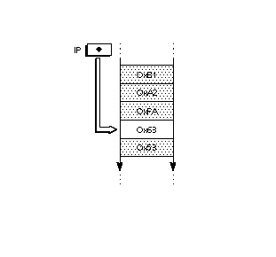
Altering the flow of control
Normally, opcodes encountered in the instruction stream execute sequentially, however, the order of execution of can be altered by a set of instructions known as flow of control instructions. These instructions are listed in Table 4 below.
Table 4 The flow of control instructions
| Mnemonic | Instruction |
|---|---|
| IF test | IF[] |
| ELSE clause | ELSE[] |
| End IF | EIF[] |
| Jump Relative On False | JROF[] |
| Jump Relative On True | JROT[] |
| JuMP Relative | JMPR[] |
| LOOP and CALL | LOOPCALL[] |
The stack
The TrueType interpreter stores any data needed by instructions and the results created by instructions on the interpreter stack. Placing data on the stack is termed a push operation. Taking data from the stack is termed a pop operation. The last item pushed onto the stack will always be the first item popped.
Stack elements are always 32 bits wide. The data types used in the stack are documented in The Instruction Set. That section also provides additional details on stack interactions.
Moving data from the instruction stream to the stack
A few instructions known collectively as push instructions move data from the instruction stream to the interpreter stack. These instructions are unique among the TrueType instruction set in taking their arguments from the instruction stream. All other instructions take any data needed from the stack. The push instructions are summarized in Table 5 below.
Table 5 The push instructions
| Mnemonic | Instruction |
|---|---|
| PUSH N Bytes | NPUSHB[] |
| PUSH N Words | NPUSHW[] |
| PUSH Bytes | PUSHB[abc] |
| PUSH Words | PUSHW[abc] |
Since the instruction stream is 8-bits wide and the stack is 32 bits wide, bytes that are pushed onto the stack are extended to 32-bits. When words (16-bit quantities) are pushed on the stack they are created from two bytes (the high byte appearing first in the instruction stream) and sign extended to 32 bits.
FIGURE 12 Extending a byte value to form a long word
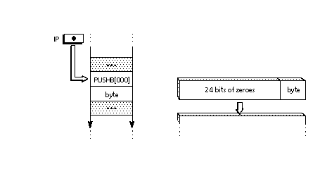
Those that push words combine two bytes to form a signed word and then sign extend that word until it is 32 bits wide. When two bytes are combined to form a word, the high byte of that word is always the one appearing first in the instruction stream. The low byte is the one that appears second. FIGURE 13 shows how two instruction stream bytes are combined and then sign extended when they are pushed onto the stack.
FIGURE 13 Combining byte values to form a sign extended long word
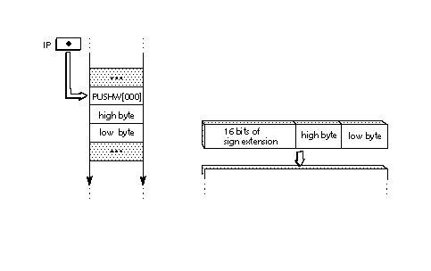
Managing the stack
TrueType provides basic stack manipulation operations that make it possible to change the contents of the stack or reorder its elements. These instructions are listed in Table 6 below.
Table 6 : Managing the stack
| Mnemonic | Instruction |
|---|---|
| CLEAR the stack | CLEAR[] |
| DEPTH of the stack | DEPTH[] |
| DUPlicate top stack element | DUP[] |
| POP top stack element | POP[] |
| Copy INDEXed element | CINDEX[] |
| Move INDEXed element | MINDEX[] |
| ROLL top 3 stack elements | ROLL[] |
| SWAP top two stack elements | SWAP[] |
Repeating an instruction with loop
Normally an instruction encountered in the instruction stream will execute only once. Some instructions look at the loop state variable and execute the number of times that variable dictates. The instructions that use the loop variable are listed in Table 7.
The default value for the loop variable is 1. Setting loop to zero or a negative value is illegal. The loop variable is set with the SLOOP[ ] instruction shown in Table 8.
Table 7 Instructions that use the loop variable
| Mnemonic | Instruction |
|---|---|
| Align Relative Point | ALIGNRP[] |
| FLIP PoinT | FLIPPT[] |
| Interpolate Point | IP[] |
| SHift Point | SHP[a] |
| SHift by PIXEL amount | SHPIX[] |
Table 8 Setting the value of the loop variable
| Mnemonic | Instruction |
|---|---|
| Set LOOP | SLOOP[] |
Performing arithmetic
The TrueType instruction set provides the basic arithmetic functions as enumerated in Table 8. Unless otherwise noted, arithmetic is done on 26.6 fixed point numbers producing 26.6 fixed point results.
Table 9 Performing logical operations.
| Mnemonic | Instruction |
|---|---|
| ADD | ADD[] |
| SUBtract | SUB[] |
| DIVide | DIV[] |
| MULtiply | MUL[] |
| ABSolute value | ABS[] |
| NEGate | NEG[] |
| FLOOR | FLOOR[] |
| CEILING | CEILING[] |
| MAXimum | MAX[] |
| MINimum | MIN[] |
Performing logical operations
The TrueType instruction set provides a set of basic logical functions. They are enumerated in Table 10. These functions return zero if the result is FALSE and a non-zero value if the result is TRUE.
Table 10 Performing logical operations.
| Mnemonic | Instruction | |
|---|---|---|
| Less Than | LT[] | |
| Less Than or EQual | LTEQ[] | |
| Greater Than | GT[] | |
| Greater Than or EQual | GTEQ[] | |
| EQual | EQ[] | |
| Not EQual | NEQ[] | |
| ODD element | ODD[] | |
| EVEN element | EVEN[] | |
| AND | AND[] | |
| OR | OR[] | |
| NOT | NOT[] |
The storage area
The interpreter maintains a storage area consisting of a portion of memory that can be used for temporary storage of data taken from the interpreter stack. It is possible to read the values of stored data and to write new values to storage. Storage locations range from 0 to n-1 where n is the value established in the maxStorage entry in the 'maxp' table of the font file. Values are 32 bit numbers.
Reading from and writing to storage
The following two instructions make it possible to read a value from a location in the interpreter storage area and to write a new value to a storage location.
Table 11 : Accessing Storage
| Mnemonic | Instruction |
|---|---|
| Read from Storage | RS[] |
| Write to Storage | WS[] |
Managing points in the pixel grid
The key task of the TrueType instruction set is one of grid-fitting glyph outlines to allow the scan converter to produce superior bitmap images for display. That task consists of reshaping glyph outlines by moving the points that make up their outline. The following sections describe the instructions that are used to manage points in the pixel grid.
Zones and points
Points are locations in a grid. As stored in the font file, points have coordinates that are expressed in FUnits. These coordinates refer to positions in the master grid. Once scaled by the font engine, however, point locations are expressed as 26.6 fixed point numbers representing locations in the device specific pixel grid. That is, they are given to the nearest sixty-fourth of a pixel. The notation wn:fp is used to express point locations where wn refers to a whole number and fp refers to the fractional part. The number six would be written 6:0. The number one fourth would be written 0:16. When it is convenient, point locations will be expressed as decimal numbers, such as 2.5 to represent the position two and one-half.
Instructions reference the points that comprise a glyph outline by specifying a given point number in a particular zone. The points that make up the outline of the current glyph are said to be in the glyph zone (zone 1). These points are defined in the 'glyf' table in the font file.
A second group of points useful in instructing glyphs can be created using instructions. These points are said to be in the twilight zone (zone 0). Points in zone 0 are created by instructions in a glyph program. These points are not reinitialized at the beginning of each glyph program, so each glyph program must be certain to set these points in the desired location before accessing them.
Instructions do not refer to zones explicitly but use one or more of three zone pointers which can be set to either of the two zones. If an instruction uses zone pointer 1 (zp1), that instruction will use points in the zone it references. It can point to either the twilight zone or the glyph zone.
Some instructions will assume that the points they reference are in the zone referenced by a particular zone pointer. Other instructions require an explicit designation of the zone pointer through the setting of a flag (i.e through the use of an instruction variant).
All of the following uniquely specify the same point in the glyph zone:
- point 5 in the glyph zone
- point 5 in zone 1
- point 5 in the zone pointed to by zp0 where zp0 points to zone 1
- point 5 in the zone pointed to by zp2 where zp2 points to zone 1
- rp0 in zp0 where zp0 points to zone 1and rp0 has the value 5
- rp0 in zp2 where zp2 points to zone 1 and rp0 has the value 5
All of the following specify the same point in the twilight zone
- point 5 in the twilight zone
- point 5 in zone 0
- point 5 in the zone pointed to by zp1 where zp1 points to zone 0
- rp0 in zp1 where zp1 points to zone 0 and rp0 has the value 5
Note that point 5 in the twilight zone is not the same point as point 5 in the glyph zone.
Setting zone pointers
The instructions for establishing the value of zone pointers are listed in Table 12.
Table 12 : Setting Zone Pointers
| Mnemonic | Instruction |
|---|---|
| Set Zone Pointer 0 | SZPO[] |
| Set Zone Pointer 1 | SZP1[] |
| Set Zone Pointer 2 | SZP2[] |
| Set Zone PointerS | SZPS[] |
Since both the glyph zone and the twilight zone number their points beginning with zero, the same number can appear in both zones. To unambiguously specify a point it is necessary to use its number and its zone. For example, point 6 in the glyph zone designates a unique point.
Setting reference points
Some instructions will refer to points not by their number but through the device of reference points. Each of three reference points, rp0, rp1 and rp2 can be associated with an integer representing a point number. When that reference point is associated with a particular zone, a point is unambiguously specified. Instructions for setting reference points to point numbers are listed in Table 13.
Table 13 Setting Reference Points
| Mnemonic | Instruction |
|---|---|
| Set Reference Point 0 | SRPO[] |
| Set Reference Point 1 | SRP1[] |
| Set Reference Point 2 | SRP2[] |
Flipping points
On-curve points can be changed to off-curve points and vice versa. A single point or a range of points can be changed. Table 10 lists the instructions that flip points.
Table 14 Flipping points
| Mnemonic | Instruction |
|---|---|
| FLIP PoinT | FLIPPT[] |
| FLIP RanGe ON | FLIPRGON[] |
| FLIP RanGe OFF | FLIPRGOFF[] |
Movement in the pixel grid
Movement of points in the pixel grid is always along the freedom vector, a graphics state variable representing a vector in the pixel grid. The freedom vector can be translated in space so that it maintains its orientation relative to the coordinate system but passes through the point that is to be moved. By convention, the freedom vector is shown as a dotted line passing through a point that is to be moved. Points move along the vector.
For most instructions, a given freedom vector and its 180 degree opposite are equivalent. The lone exception is the SHPIX[ ] instruction which measures distance along the freedom vector. When points are moved along the freedom vector, the direction of movement of the point will be shown as illustrated in FIGURE 14.
FIGURE 14 Moving points along the freedom vector
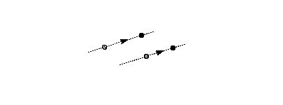
Getting and setting the freedom vector
One instruction exists for obtaining the current value of the freedom vector. Its value is returned as a pair of (x,y) coordinates. The freedom vector can be set by specifying its coordinates on the stack, by setting it to either or the coordinate axes, by setting it to be parallel or perpendicular to a line or by setting it to be parallel or perpendicular to the projection vector. The instructions for setting the freedom vector are listed in Table 15.
Setting and getting point locations
The following sections describe how to find the location of a point in the pixel grid and how to set it to a specified location.
Getting the location of a point along the projection vector
The location of a point is expressed as a position along the current projection vector. To understand how the interpreter determines the location of a point imagine that a perpendicular is dropped from that point to the vector. In the illustrations that follow, lines used to project distances onto the projection vector are dashed. The location where the perpendicular intersects with the projection vector is used to read the coordinate of the point.
This process is illustrated in FIGURE 15. In the illustration, points p1, p2 and p3 are all at coordinate position 1.2 as would any point that can be found on line L1L1'. Point p4 is at coordinate position -0.6.
FIGURE 15 Getting the coordinate of a point

Setting the location of a point
To set the coordinate of a point means to make its projection onto the projection vector equal to the desired value. Conceptually, this is done by moving the point along the freedom vector to the position where the vector intersects with a perpendicular to the projection vector at the desired coordinate value.
In FIGURE 16 the three points p1, p2 and p3 are all set to have the same value along the projection vector. Each point is moved along the freedom vector until it reaches the intersection point of the freedom vector and a perpendicular to the projection vector at the coordinate position 2.
FIGURE 16 Setting the coordinate of a point
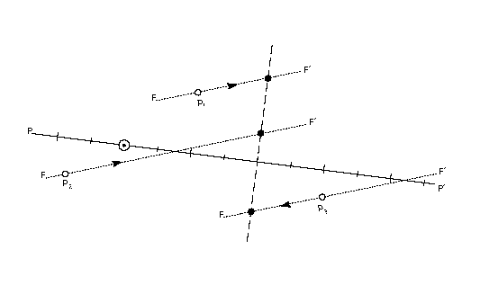
The instructions for getting and setting a point coordinate are listed inTABLE 1
TABLE 1 Getting and setting a point coordinate
| Mnemonic | Instruction |
|---|---|
| Get Coordinate | GC[a] |
| Set Coordinate From Stack | SCFS[] |
Measurement in the pixel grid
Measurement of distances in the pixel grid is always along the projection vector, a graphics state variable describing a vector in the pixel grid. Grid distances are signed values. Measuring the distance from point A to point B will produce a result with the opposite sign from that obtained by measuring the distance from point B to point A.
By convention, a solid line emanating from the origin of the grid coordinate system with grid units marked by long lines and half-grid units marked by short lines is used to represent the projection vector. The projection vector is shown in FIGURE 17.
FIGURE 17 The projection vector
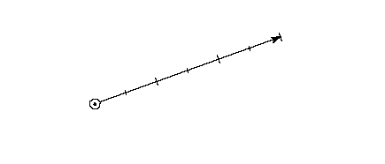
Setting the projection vector
One instruction exists for obtaining the current value of the projection vector. Its value is returned as a pair of (x,y) coordinates. The instructions for getting and setting the projection vector are listed in Table 16.
Table 16 Getting and setting the projection vector
| Mnemonic | Instruction |
|---|---|
| Get Projection Vector | GPV |
| Set Dual Projection Vector To Line | SDPVTL[] |
| Set Projection Vector From Stack | SPVFS[] |
| Set Projection Vector To Coordinate Axis | SPVTCA[a] |
| Set Projection Vector To Line | SPVTL[a] |
Finding the distance between two points
The distance between two points is determined by comparing their locations along the projection vector. Distances between a point and a reference point are always obtained by subtracting the coordinate, along the projection vector, of the reference point from the coordinate of the point.
When measuring the distance between two points it is important to distinguish between the master outline distance between those points and their grid-fitted distance difference. Distance is measured along the projection vector and is a signed quantity. The value returned is a F26Dot6 number representing a quantity in pixels. In other words, the distance is measured between points in the scaled outline resident in the pixel grid.
Table 17 Measuring the distance between two points
| Mnemonic | Instruction |
|---|---|
| Measure Distance | MD[a] |
Engine compensation using color
In addition to the property of magnitude, distances also have the property of color. Color is used to compensate for the effects of different marking engines on the appearance of the final output image of a glyph.
Determining the color of a distance
The TrueType interpreter distinguishes between three different types of distances: black, white, and grey.
Black areas are those containing pixels turned on by the scan converter. White areas are areas containing no pixels turned on by the scan converter.
When considering the distance between two points, the following rules will determine whether the distance is black, white, or grey:
Distances that cross only black areas are black distances. Distances that cross only white areas are white distances. Distances that cross a combination of black and white areas can be black, white or grey depending upon the combination of distances types covered.
- If there is black to the right of both points (along the projection vector), the distance is grey.
- If there is black to the left of both points, the distance is grey.
The rules shown in FIGURE 18 can be used to determine the color of a distance made up of subdistances of differing color.
FIGURE 18 Combining distance colors
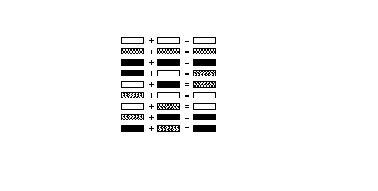
FIGURE 19 shows an example of how black, white, and grey distances are combined. The distance [4,5] is black; [4,0] is grey and [5,0] is white. The combined distance [4,0] adds a black distance to a white distance to get a grey distance. When that grey distance is added to the black distance [0,1] the resulting distance [4,1] is grey plus black or black.
FIGURE 19 White, black and grey distances
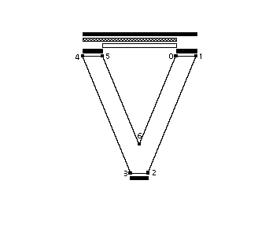
Compensate for the engine characteristics
The distance type is used in determining how the instructions listed in Table 18 and the other instructions that use the graphic state variable round state will manage distance values. With grey distances, because they combine black and white distances, no engine compensation takes place. Black or white distances, however, require a compensation term be added or subtracted before rounding takes place. The amount of compensation needed will be set by the printer driver. For example, if the printing engine has large pixels, the interpreter will compensate by making black distances tend to shrink and white distances tend to grow. The result in that on different dot-size printers, the font should produce equivalent weight and color for the final outputted glyphs.
Rounding
All rounding done by the TrueType interpreter is applied to values representing distances between two points, rather than to grid positions. The effect of rounding a value depends upon the setting of the round state variable. Values can be rounded to integers or half integers.
All rounding works by using a round state setting to control how the domain of 26.6 fixed point numbers is mapped to a set of discrete values that are separated by equal distances. A number of predefined rounding rules are available and can be set using instructions. These make up possible to round to the nearest integer (RTG[]), to the nearest half integer (RTHG[]), the nearest smaller integer (RDTG[]), the nearest larger integer (RUTG[]) or the nearest half integer or integer (RTDG[]).
The effect of rounding the distance 1.4 with each of the predefined round states is shown in FIGURE 20.
FIGURE 20 The effect of the round states
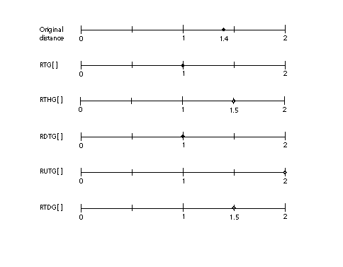
In addition to the predefined rounding states, two instructions can be used to set custom round states. They are SROUND[] and S45ROUND[]. These work by setting the period, phase and threshold, that together define the actions of a round, separately.
- The period specifies the length of the separation or space between rounded values.
- The phase specifies the offset of the rounded values from multiples of the period.
- The threshold specifies the part of the domain, prior to a rounded value, that is mapped onto each value. More intuitively, the threshold tells a value when to "fall forward" to the next largest integer.
Each of the predefined round states is equivalent to a particular setting of the period, phase and threshold. The relationship is shown in Table 19.
Table 19 Mapping predefined round states to custom states
| Instruction | period | phase | threshold |
|---|---|---|---|
| RTG[] | grid | 0 | 4/8 period |
| RTHG[] | grid | 1/2*period | 4/8 period |
| RTDG[] | 1/2 * grid | 0 | 4/8 period/64 |
| RUTG[] | grid | 0 | period -1 |
| RDTG[] | grid | 0 | 0 |
The period is based on the value of the gridPeriod, the distance between grid positions. For SROUND[], the gridPeriod is equal to 1.0 pixels. For S45ROUND[], the gridPeriod is square root of 2 pixels. Table 20 shows the possible values for the period and how they relate to the gridPeriod. For additional information on setting the period, phase and threshold, see the entries for SROUND[] and S45ROUND[] in The Instruction Set.
The period parameters can have values of 1/2 pixel, 1 pixel, or 2 pixels.
Table 20 Setting the period
| binary | setting |
|---|---|
| 00 | gridPeriod/2 |
| 01 | gridPeriod |
| 10 | gridPeriod*2 |
| 11 | Reserved |
The period specifies the length of the separation or space between rounded values. As shown on the number lines in the illustrations below, if the period is 0.5, rounded values are separated by half integers. A period of 1.0 separates rounded values by one integer. A period of 2.0 separates rounded values by two.
In FIGURE 21, the three number lines, with small circles representing possible rounded values, illustrate three possible period settings.
FIGURE 21Examples of the period
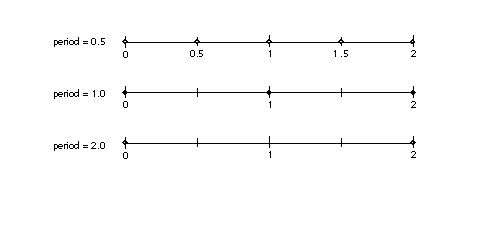
The phase specifies the offset of the rounded values from multiples of the period. As shown in the first example below, if the phase is zero, and the period is one, we have the familiar case where values are not offset and will round to integral values. In the second case, where the phase is 0.25 and the period is 1.0, rounded values are offset by one-quarter and will round to 0.25, 1.25, 2.25 and so forth.
The phase parameters can have values of 0 pixels, 1/4 pixel, 1/2 pixel, or 3/4 pixel. In the examples in FIGURE 22 below, the period is 1.0.
FIGURE 22 Examples of the phase
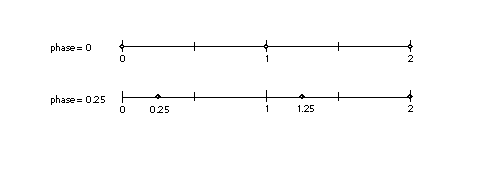
The threshold represents the portion of the period that rounds up to the next value. FIGURE 23 shows two examples where the period and phase are held constant and the value of the threshold is changed. In the first case, a threshold of 0.5 is equivalent to round to grid. In the second case, a threshold of 0.25 results in values from, for example, 0.75 through 1.75 rounding to the value 1.
The threshold parameters can have values of -3/8 period, -2/8 period,... 11/8 period. It can also have the special value largest-number-smaller-than-period which causes rounding e quivalent to CEILING. In the examples in FIGURE 23 below, the period is one, the phase is zero and the threshold is one-half.
FIGURE 23 Examples of the threshold
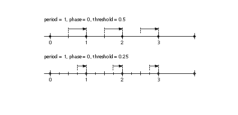
A more complex example is shown in FIGURE 24. For example, SROUND(01:01:1000) maps numbers into the values 0.25, 1.25, 2.25, The numbers from -0.25 up to but not including 0.75 are mapped into 0.25. The range of numbers from 0.75 up to but not including 1.75 map into 1.25. Similarly, the numbers from 1.75 up to but not including 2.75 map into the number 2.25 and so on. In other words, the period is 1.0, the phase is 0.26 and the threshold is 0.5.
FIGURE 24 A complex example
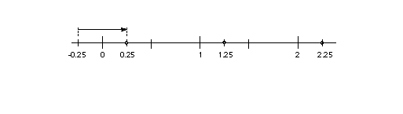
Rounding and the minimum distance
When rounding, it is possible that certain values will round to zero or to an unacceptably small value. This is especially likely at small pixel per em sizes. Sometimes rounding a value to zero is undesirable because it will result in a glyph feature, such as a counter or stem, disappearing. To avoid undesirable rounding to zero, there is a minimum distance variable in the graphics state. The MIRP[] and MDRP[] instructions both make use of the minimum distance state variable. This represents the smallest possible value to which any value can be rounded. Values less than the minimum distance value will be rounded up to the minimum distance regardless of the round state, when the minimum distance Boolean is set.
Setting the round state
The instructions that can be used to set the round state are listed in Table 21.
Table 21 Setting the round state
| Mnemonic | Instruction | |
|---|---|---|
| Round Down To GRid | RDTG[] | |
| turn Rounding OFF | ROFF[] | |
| Round To Double Grid | RTDG[] | |
| Round To Grid | RTG[] | |
| Round To Half Grid | RTHG[] | |
| Round Up To Grid | RUTG[] | |
| Super 45 ROUND | S45ROUND[] | |
| Super ROUND | SROUND[] |
Order of rounding operations
Rounding occurs after compensation for the color of a distance. The steps in the rounding of a number n are:
- add engine compensation to n
- subtract the phase from n
- add the threshold to n
- truncate n to the next lowest periodic value (ignore the phase)
- add the phase back to n
- if rounding caused a positive number to become negative, set n to the positive round value closest to 0
- if rounding caused a negative number of become positive, set n to the negative round value closest to 0
Moving points
The following sections describe those instructions that move points.
Shifting the position of a point
The position of a single point, the points that make up a contour, or all of the points in a zone can be shifted by the amount that a reference point has been shifted using one of the instructions listed in Table 22. The magnitude of the shift is a signed value. It is also possible to shift a point by a specified amount.
Table 22 Shifting pointsMnemonic Instruction SHift Point SHP[a] SHift Contour SHC[a] SHift Zone SHZ[a] SHift by PIXEL amount SHPIX[]
Moving a point to a specified location
Points can be moved to a given coordinate location with one of two absolute instructions. The location to which the point is moved can be specified in the control value table, as in the case of MIAP[], or in the instruction itself, as in MDAP[].
Table 23 Moving to a specified locationMnemonic Instruction Move Indirect Absolute Point MIAP[a] Move Direct Absolute Point MDAP[a]
Moving a point a stated distance
Points can be moved relative to other points. When a point moves a given number of units, movement will be along the freedom vector but the distance moved will be measured along the projection vector. To understand how the interpreter will carry out such a move imagine that the current location of that point is projected onto that vector, and the point is moved along the freedom vector until it is the required number of units along the vector.
It is illegal to execute instructions that move points when the freedom and projection vectors are orthogonal. Attempts to do so will yield undefined results and will be different on different versions of the TrueType software.
Table 24 : Moving points relative to a reference pointMnemonic Instruction Move Direct Relative Point MDRP[abcde] Move Indirect Relative Point MIRP[abcde] Move Stack Indirect Relative Point MSRP[a]
Aligning points
Instructions can be used to align points relative to each other or to a reference point. Points are said to be aligned if the distance between them, along the current projection vector, is zero. Table 25 lists the instructions that align points.
Table 25 : Aligning pointsMnemonic Instruction ALIGN PoinTS ALIGNPTS[] ALIGN to Reference Point ALIGNRP[] move point to InterSection ISECTP[]
Interpolating points
Two interpolation instructions make it possible to adjust the position of a point or points based on the movements of other points.
The first of the interpolation instructions, IP[ ], changes the position of a point based on their changes in the position of two reference points. The second, IUP[ ] interpolates all untouched points between touched points.
Points that are acted upon by a TrueType instruction are said to have been touched. Points that are touched will be not be affected by the IUP[ ] instruction. If it is desirable to have an IUP[ ] instruction affect such a point, it can be untouched using the UTP[ ] instruction. Points can be touched without moving them by using the MDAP[] instruction with no rounding. Additional complexities of the interpolation instructions will be explained in The Instruction Set.
Table 26 Interpolating pointsMnemonic Instruction UnTouch Point UTP[] Interpolate Point[ ] IP[] Interpolate Untouched Point IUP[]
Creating points in the twilight zone
Table 27 Points in the twilight zone are not part of the font file but must be created with one of the direct instructions (MIRP[], MSIRP[] or MIAP[]).
TABLE 27: Creating points in the twilight zone
Mnemonic Instruction Move Indirect Absolute Point MIAP[] Move Indirect Relative Point MIRP[] Move Stack Indirect Relative Point MSIRP[]
MIAP[] is used to create a point that is a specific distance (x,y) away from the origin (0,0). MIRP[] is used to create a point that is a specific distance away from a reference point. The reference point can itself be in either zone 0 or zone 1. Both MIAP[] and MIRP[] obtain the distance from the control value table. MSIRP[] also creates a point that is a specified distance from a reference point, however, the distance is taken from the stack rather than from the control value table.
Once created, points can be moved by MDRP[] and other instructions. A new reference to the point by MIAP[], MIRP[], or MSIRP[] will create a completely new position that has nothing to do with the previous position of the point (unless the point is itself the reference point used by the MIRP[] or the MSIRP[] instructions).
For example, suppose rp0 refers to point 7 in zone1, and its coordinates are 3:0, 4:0). Suppose that zone pointer 1 is set to point at zone 0, the projection and freedom vectors are set to the x-axis, and the instruction MSIRP[] is executed with the values 1 and 0:48 on the stack. The result is that point 1 in zone 0 will have ungrid-fitted coordinates of (3:48, 4:0) and grid-fitted values of (4:0, 4:0). If the freedom and projection vectors are now set to the y-axis, and the instruction MSIRP[] is executed with the values 1 and 0:20 on the stack, the new ungrid-fitted and grid-fitted values of point 1 in zone 0 will be (4:0, 5:20).
Cut-in values
The TrueType language offers several means of coordinating the size of features within individual glyphs and across glyphs in a font. Such coordination is useful when the number of pixels available for a feature or a glyph are few in number. It prevents small differences in the size from becoming exaggerated by the change in the placement of pixel centers relative to a glyph outline.
Such coordination, however, becomes a liability when small differences in the size or placement of features can be effectively represented by the number of available pixels. TrueType allows you to regularize features at small numbers of pixels per em while allowing the outline to revert to the original design once a sufficient number of pixels is available.
There are two different ways to accomplish this goal. Each one uses a cut-in value. The first method uses the control value table and the control value cut-in. This method allows for arbitrary values to be substituted for the actual value. The second method takes regularization a step further and substitutes a single value known as the single width value. It is used with the single width cut-in.
The control value table
The control value table is an ordered list of values used by the indirect instructions. By using a control value table entry rather than an outline measurement, it is possible to collapse values that vary by a small amount to a single value at certain pixel per em sizes. The control value table works by using the control value cut-in described in the next section.
The control value cut-in
The control value cut-in limits the regularizing effects of the control value table to cases where the difference between the table value and the measurement taken from the original outline is sufficiently small.
The cut-in is a factor only in instructions that reference the control value table. These are the indirect instructions (MIRP[] and MIAP[]). By having these instructions look at the cut-in value it is possible for a point to be moved to a position specified in the control value table only in cases where the value in the table is sufficiently close to that in the original outline. In practice this means that the original outline will be favored at high pixel per em values, where there will typically be a large difference between the control value table entry and the outline distance, while at small pixel per em values, distances can be made to converge on a single value. This makes it possible to have related stems have a uniform width at small pixel per em values while allowing the original subtleties of the font design to reemerge at larger sizes.
- The cut-in is applied according to the following rules:
- When the absolute value of the difference is less than or equal to the cut-in, the control value table entry is used.
- When the absolute value of the difference between the table entry and the outline value is greater than the cut-in the actual value is used.
Note that the difference shown in Table 28 is the difference between the scaled control value table entry and the scaled outline distance. The cut-in is a F26DOT6 value, i.e. it is in pixels.
Table 28 Some examples of the use of the cut-in in MIAP[]CVT Value Original Outline Value |Difference| Cut-in Value used 93 80 13 68/64 outline 100 99 20/64 44/64 68/64 table 97 95 60/64 68/64 68/64 table
FIGURE 25 below illustrates the use of the cut-in. In the master outline for the font shown, the capital J dips below the base line. At small pixel per em sizes, this subtlety cannot be shown. Even one pixel below the baseline would be too much at 18 ppem. When the character is grid-fitted the curve is held to the baseline by an indirect instruction so long as the actual distance below the baseline is less than the cut-in. When the distance difference exceeds the cut-in value of 68/64, the original value is reinstated. In this particular case, the curve is held to the base line through 81 pixels per em but reverts to its original design at 82 pixels per em as shown.
FIGURE 25 Overshoot and the cut-in
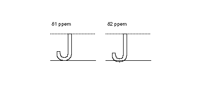
The effect of the cut-in varies with its value. Decreasing the value of the cut-in will have the affect of causing the outline to revert to the original design at a smaller ppem value. Increasing the value of the cut-in will cause the outline to revert to the original design at a higher ppem value.
Table 29 demonstrates some of the effects of changing the cut-in.
Table 29 Varying the cut-in valuecut-in outline value CVT value difference value uses 64/64 = 1 98 60/64 100 68/64 outline 64/64 = 1 99 100 64/64 = 1 CVT 64/64 = 1 101 100 64/64= 1 CVT 64/64 = 1 101 4/64 100 68/64 outline 68/64 98 56/64 100 72/64/16 outline 17/16 98 15/16 100 17/16 CVT 17/16 101 1/16 100 17/16 CVT 17/16 101 2/16 100 18/16 outline 18/16 98 13/16 100 19/16 outline 18/16 98 14/16 100 18/16 CVT 18/16 101 2/16 100 18/16 CVT 18/16 101 3/16 100 19/16 outline
The single width value and single width cut-in
The single width cut-in is the distance difference at which the interpreter will ignore both outline values and the control value table entries in favor of the single width value. It allows desired features to revert to a single predetermined size. The default for both the single width and the single width cut-in is zero pixels. It will not have any effect unless the default is set to another value.
The single width cut-in is used with MIRP[] and MDRP[].
This might be useful at very small grid sizes where forcing all controlled glyph features to assume the same dimensions can be an advantage in certain fonts. When the absolute difference between the single width value and the original outline value is smaller than the single width cut-in, the single width value is used.
.
Table 30 varying the single width valuesingle width cut-in outline value single width value difference value uses 0 99 100 1 outline 0 100 100 0 outline 1 98 15/16 100 1 4/64 outline 1 99 100 1 single width 1 101 100 1 single width 1 101 1/16 100 1 4/64 outline
Order of operations
Instructions sometimes will move a point, calculate a value, compensate for the color of the value, round according to the round state and then apply the cut-in tests. The order in which these operations are executed is significant and is given here.
Table 31 Order of operations in move instructionsMIRP[] check single width cut-in check control value cut-in compensate for the color of the distance round the distance check the minimum distance move the point MDRP[] check the single width cut-in compensate for the color of the distance round the distance check the minimum distance move the point MIAP[] check the control value cut-in round the value move the point MSIRP[] move the point MDAP[] round the value move the point
Size specific instructions
All of the instructions mentioned to this point are not size specific. Their actions are always applied, unless a conditional statement causes some of the code in a sequence not to execute. Sometimes it is necessary to change the outline at particular ppem value to produce the desired result. The DELTA instructions make this possible.
Since DELTA instructions are exceptions to the grid-fitting performed by other instructions, it is important that they be added to glyph instructions after all other instructions have been decided upon. Any changes to the other instructions may change a DELTA's effect or render it useless.
There are two different types of DELTA instructions. The first type, the DELTAP, works by directly specifying the point number at which the exception is to be applied. The second type, the DELTAC, works by specifying the control value table entry number at which the exception is to be applied.
Table 32 The DELTA instructions
Mnemonic Instruction DELTA exception P1 DELTAP1[] DELTA exception P2 DELTAP2[] DELTA exception P3 DELTAP3[] DELTA exception C1 DELTAC1[] DELTA exception C2 DELTAC2[] DELTA exception C3 DELTAC3[]
The 8 bit arg component of the DELTA instructions decomposes into two parts. The first 4 bits represent the relative number of pixels per em at which the exception is applied. The second 4 bits represent the magnitude of the change to be made. The structure of the arg is shown in FIGURE 26.
FIGURE 26 The arg parameter to the DELTA instructions
--------------------------- arg = | rel ppem | magnitude | ---------------------------
The relative number of pixels per em at which a DELTA is applied is a function of the delta base and the choice of DELTA instruction. Table 33 below summarizes the sizes at which the various instructions apply.
Table 33 The range of the Delta instructionsDELTAC1 DELTAP1 (delta_base) through (delta_base + 15) DELTAC2 DELTAP2 (delta_base + 16) through (delta_base + 31) DELTAC3 DELTAP3 (delta_base + 32) through (delta_base + 47)
The magnitude of the change produced by a DELTA instruction is a pixel value dependent upon the current value of the delta shift state variable. The number of possible steps is 2 to the power delta shift. Each step has the magnitude 1 over that number.
Since only four bits are available to store the exception size, the magnitude of the change made to the point location is remapped before it is stored in the exception specification. The table below maps the number of steps in the exception to the number that should be stored as the second part of argi.
Table 34 : Magnitude values mapped to number of steps to moveMagnitude 0 1 2 3 4 5 6 7 8 9 10 11 12 13 14 15 Number of steps -8 -7 -6 -5 -4 -3 -2 -1 1 2 3 4 5 6 7 8
A DELTAP example
In the example below, a DELTAP1 is applied to point 12 at 9 pixels per em. Assume that the delta shift has been set to 6.Moving point p by -3/64 of a pixel, prevents the dropout shown at the left. This instruction would expect the parameter 1(number of exceptions) and $05 which can be decomposed into the byte 0, the relative pixels per em value, and the byte 5 which represents -3 steps in magnitude (but is stored as exception 5 in table above).
Figure 27 A dropout is filled in using a DELTAP instruction
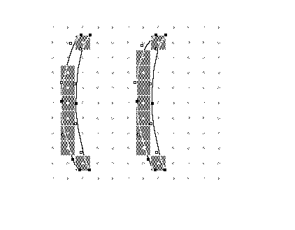
A DELTAC example
In the example below, imagine that control value table entries 4 and 11 refer to features that are close in size and expected to grow together. At 12 ppem and 14 ppem, these features will round together (assuming the round state is round to grid). At 13 ppem, the two values will round in opposite directions. The actual figures are shown in TABLE 3.
TABLE 3 Scale control value table entry valuesControl value table Control value table values in pixels per em Entry number Value in FUnits 12 ppem 13 ppem 14 ppem 4 120 45/64 49/64 53/64 11 125 47/64 51/64 55/64
A DELTAC instruction can be used to force the values to round together. At the default delta base of 9, the exception will take place at a ppem value of 13. The exception value of 8 signifies one step. At the default delta shift value, this will mean a movement of 4/64 of a pixel.
PUSHB[] Push one byte onto the stack. 1 Number of control value table, exception pairs. 4 Control value table entry number 72 Exception 72 = 0100 10002 signifying a relative pixel per em value of 4 and a magnitude of 8. DELTAC1[] Create a delta exception to a control value table entry.
The values that are actually in the control value table or that are part of the instruction are in bold face. The other values presented are strictly to aid in understanding the example.
For the sake of this example, assume that the delta base is 9 producing a range from 9 through 24 pixels per em. Assume further that the delta shift is 4 making the smallest possible move equal to 1/16 of a pixel.